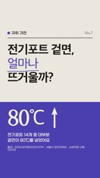
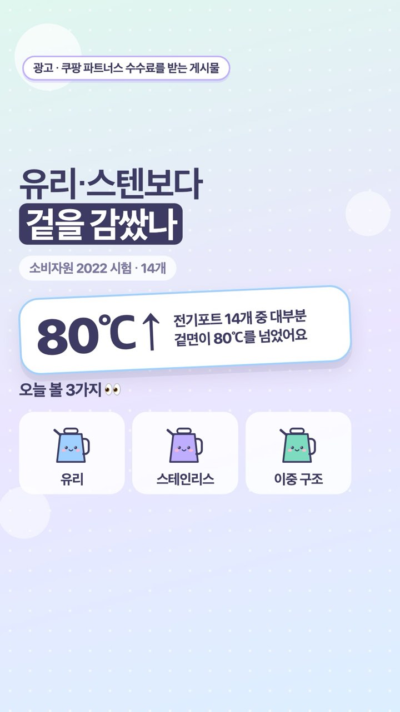

7번 영상
전기포트 겉면, 얼마나 뜨거울까?
광고 이 게시물은 쿠팡 파트너스 활동의 일환으로, 이에 따른 일정액의 수수료를 제공받습니다.
영상에서 비교한 3가지예요. 누르면 쿠팡 검색 결과로 가요.
영상 속 비교표 바로 보기 ↓유리·스텐보다 겉을 감쌌나
소비자원 2022 시험 · 14개
80℃↑ 전기포트 14개 중 대부분 겉면이 80℃를 넘었어요
포트마다 겉면 온도
- 유리 포트
- ✔ 물 양이 바로 보여요
- ⚠ 겉면 대부분 80℃ 넘음
- 스테인리스
- ✔ 물 양 보는 창 있나 확인
- ⚠ 겉면 대부분 80℃ 넘음
- 이중 구조
- ✔ 겉면 43~63℃로 덜 뜨거움
- ⚠ 제품마다 달라요
- 겉을 플라스틱으로 한 번 더 감쌈
한국소비자원(2022.9.19) · 서울시 미디어허브 · 소비자원 시험(2015)

다 읽으셨나요?
영상에서 비교한 3가지, 여기서 바로 쿠팡에서 볼 수 있어요.